iphone265-en-light · script · initial
 SHA-256: a2cb52f648bd874e2339318205c74429dc6f331508a895b00d6bb3938d214c57
SHA-256: a2cb52f648bd874e2339318205c74429dc6f331508a895b00d6bb3938d214c57画面だけのレビューを反映した、実際のシミュレータ画面です。上部とスクロール後を掲載しています。iPad画像は元画像を残し、表示方向だけを補正しています。
Test-only unsaved confirmation drafts; no real plugin activation or network traffic. Captures retained and compared with the design mock; no approved matching native regression baseline.
閲覧期限 / Review window: 2026-10-19 20:21 JST · Tailscale only · Source/environment/image manifest
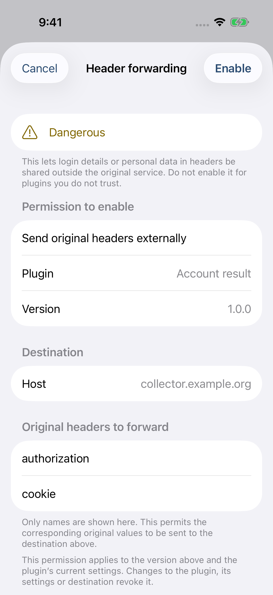
SHA-256: 8efa1a5471450b4cfa26558b89fb00be564c00a016ac96204238b7de97a7bd3b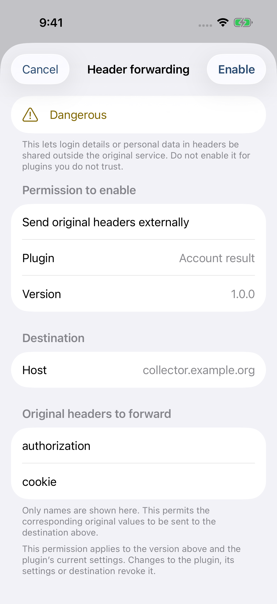
SHA-256: d7cd931b3b7f3e2f97770506bb8e66b3c43926a9902ffd05fbb2c06ac7aa7291SHA-256: a2cb52f648bd874e2339318205c74429dc6f331508a895b00d6bb3938d214c57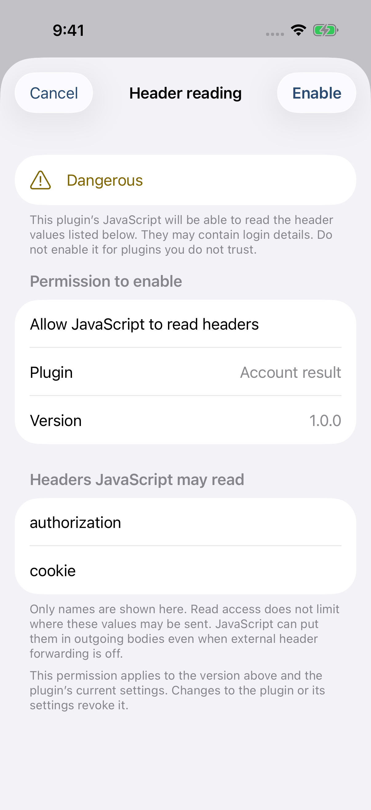
SHA-256: a2cb52f648bd874e2339318205c74429dc6f331508a895b00d6bb3938d214c57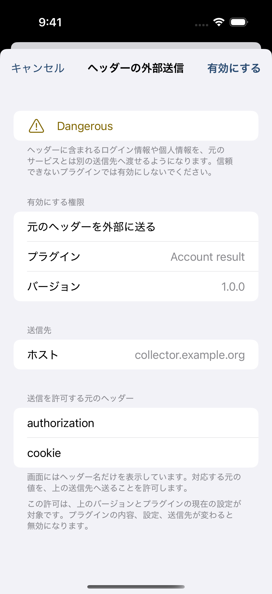
SHA-256: 2ce391887c1f1ae73bc22a4909e41dae9a11cd662a9704325799b06d6a10f2fa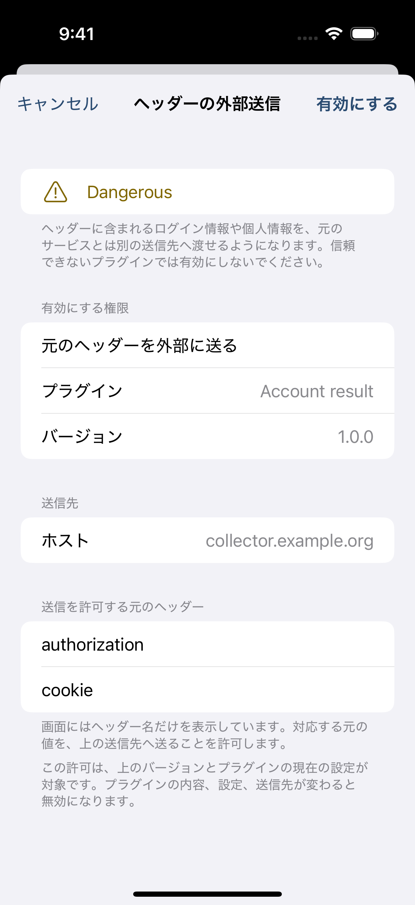
SHA-256: a1e6f82ac324509c67515adbbd391dffb08b4a9cac5b452cb89dc73d39e62536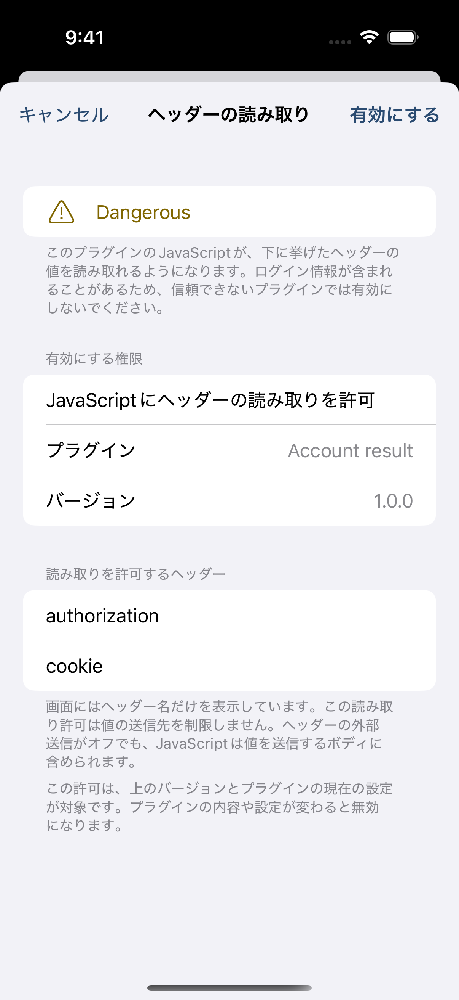
SHA-256: 18ca639ff6382c995ddf372f4cc3e165702f42ca6604f39a960e44183d60184e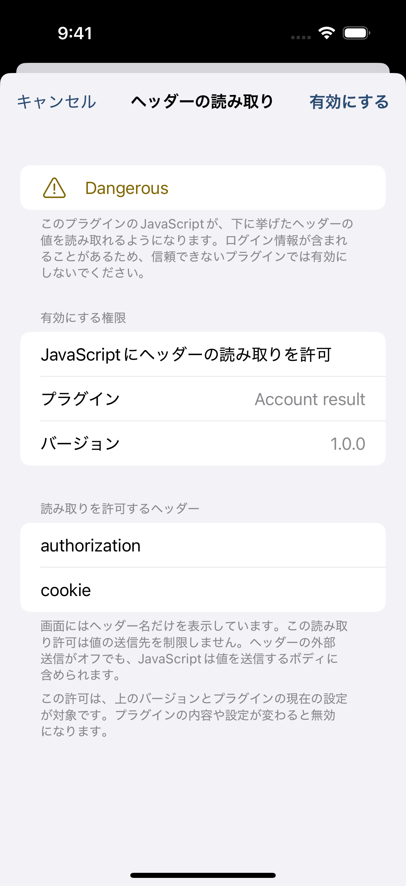
SHA-256: 46350a09af26d85b2ca959d8442165c4403c3c7331aa3d5415e470992fb286fe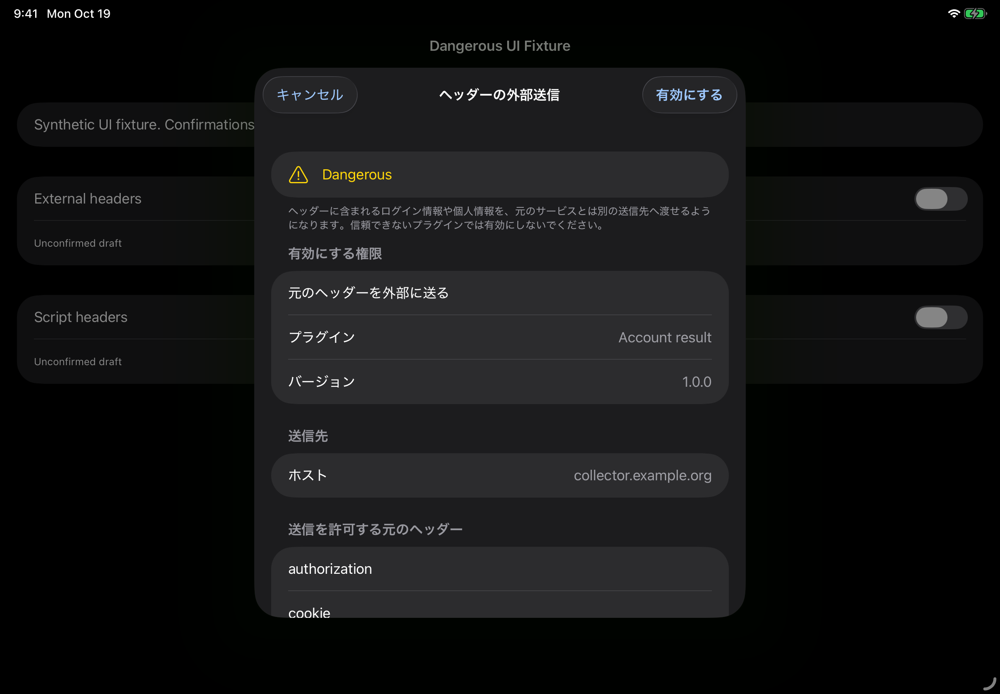
SHA-256: ca9b001dc171e3d6074393a001d470b256987d14e92163b25aed502b647cbe31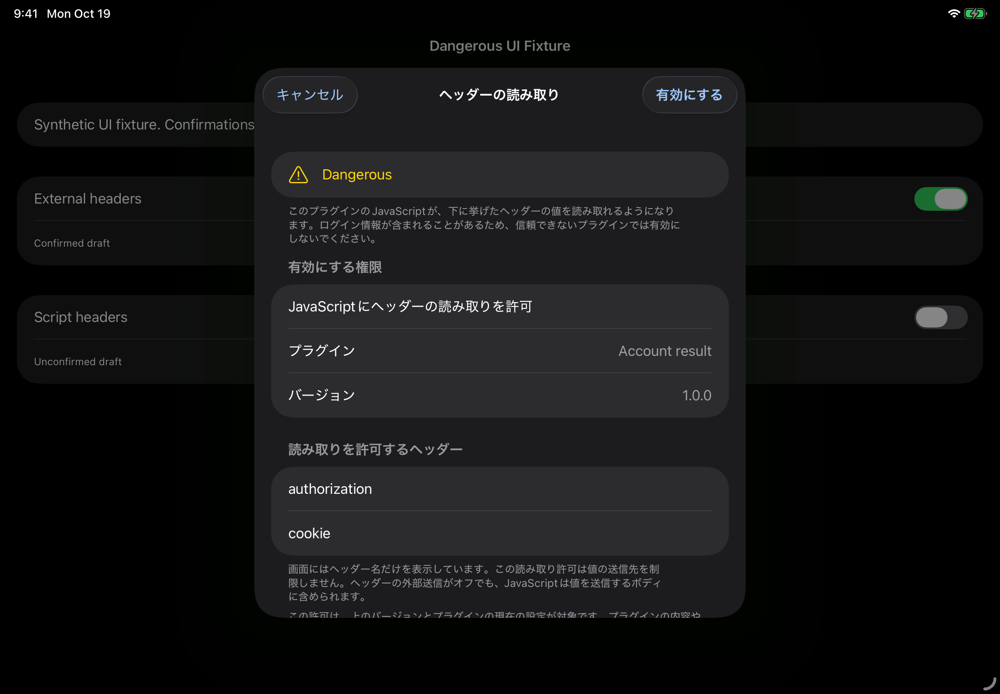
SHA-256: e133d0210947a931e1bd8ec31e5bb0d92036b1f85f5f1a2721e7ecb753171cb4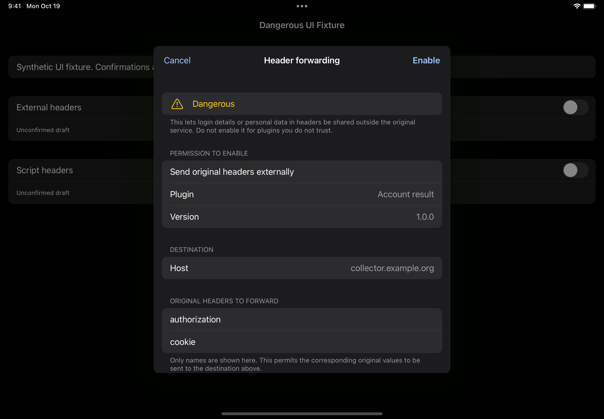
SHA-256: 26a8aee295b2c8513539ccbee4612fc8169f232df8afe949c2b054413a802c4e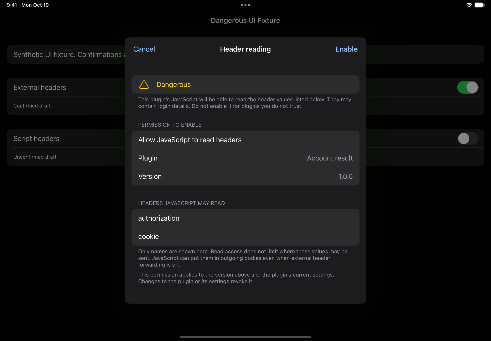
SHA-256: 1c831167c942b98c417a737b40d5fc33719e40066a811732c75324efb7d9ce1d